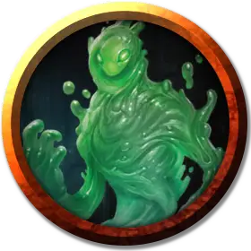

Слизелюд
Ooze-folk
Средняя Слизь, без мировоззрения

Класс Доспеха 10 (природный доспех)
Хиты 19 (2к8 + 10)
Скорость 30 футов
| мод | спас | ||
|---|---|---|---|
| СИЛ | 14 | +2 | +2 |
| ЛОВ | 3 | −4 | −4 |
| ТЕЛ | 20 | +5 | +5 |
| мод | спас | ||
|---|---|---|---|
| ИНТ | 1 | −5 | −5 |
| МДР | 6 | −2 | −2 |
| ХАР | 1 | −5 | −5 |
Иммунитет к состояниям глухота, испуг, истощение, ослепление, очарование, сбивание с ног
Чувства слепое зрение 60 футов, пассивное Восприятие 8
Опасность 1/2 (100 опыта)
Бонус мастерства +2
Среда обитания Подземье
Особенности
Прозрачный. Даже если слизелюд находится рядом, требуется проверка Мудрости (Восприятие) Сл 12, чтобы обнаружить слизь, которая не перемещается и не атакует. Существо, пытающееся войти в пространство слизи, не зная о её присутствии, захватывается ею врасплох.
Хрупкие кости. За каждые 5 единиц полученного урона скорость перемещения слизелюда снижается на 5 футов.
Действия
Мультиатака. Слизелюд совершает одну атаку Стеклянным мечом и одну атаку Ложноножкой.
Стеклянный меч. . Рукопашная атака оружием: +4 к попаданию, досягаемость 5 футов, одна цель. Попадание: 6 (1к8 + 2) рубящего урона. Если при броске атаки Стеклянным мечом выпадает "1", он разбивается и больше не может быть использован.
Ложноножка. . Рукопашная атака оружием: +4 к попаданию, досягаемость 5 футов, одно существо. Попадание: 5 (1к6 + 2) урона кислотой.